The device
The wheel, in CSS
- Real click wheel — angle-based ticks (15°/detent), press-and-turn, hold timers with repeat, CoreHaptics feedback and click sounds
- LCD with CRT scanlines, backlight illusion, working Hold switch, dimmed wheel
- Classic quirks — MENU pops one level, MENU-hold goes home, PLAY-hold sleeps
- Wheel-only navigation; deep screens stay alive like real menu drills
Music — Apple Music via MusicKit
Library
- Artists, albums, songs, genres, playlists, recently added
- Auto-refresh on foreground and when opening Music
- Cover Flow with 3D flipping covers
Playback
- Now Playing: marquee text, wheel volume, scrub, shuffle, repeat
- Background playback; tracks auto-advance in sync, even backgrounded
- Queue: hold center on a song → play next; Up Next list with jump-to-entry
- AirPlay from the hold menu
Search
- Ranked results: title > artist > album
- Hold center on a result → jump to the artist or album
Clocks
Alarms
- iPhone-style weekday repeats (S M T W T F S; none = daily)
- In-app ringer with Snooze/Stop; fires via notifications even when closed
Timer & Stopwatch
- Live Activities on the lock screen and Dynamic Island
- Timer flips to “Done” if it fires while backgrounded
Reader — PDF & EPUB
Reading
- Import from the Files app; stays on-device
- True page-based EPUB reading — pages hold complete lines only, one tick = one page
- Font 11–25 px, serif/sans, line spacing, margins, screen dimming
- PDFs via PDFKit (continuous or one-page), wheel-driven
Memory & marks
- Chapter titles from the book’s own table of contents
- Position survives force-quits and app updates (autosave + background flush)
- Page-accurate whole-book progress bar
- Highlights persist and mirror into a Notes file; PDF highlights are written into the PDF itself
Everything else
Camera
- Wheel zoom, prev/next = aspect ratio, hold = lens flip, center = capture
Voice Memos
- Background-safe long recordings, pause/resume, playback, share sheet
Photos & Notes
- Photo grid + full-screen detail; Notes editor with autosave, visible in Files
Extras
- Calendar, flashlight, About; settings for haptics, wheel, display, playback, themes
Screenshots
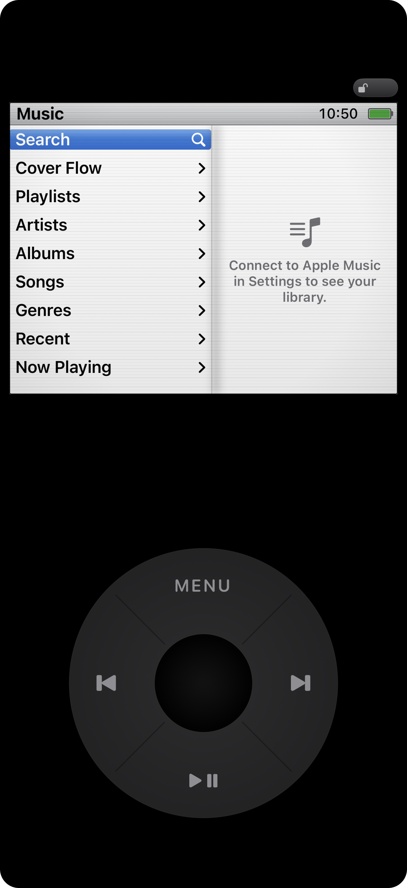
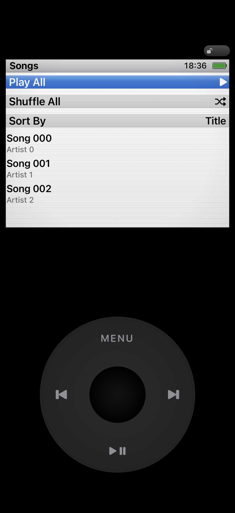
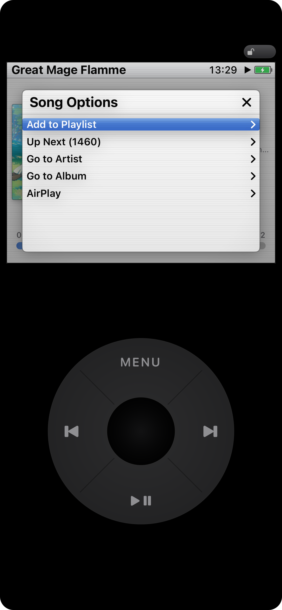
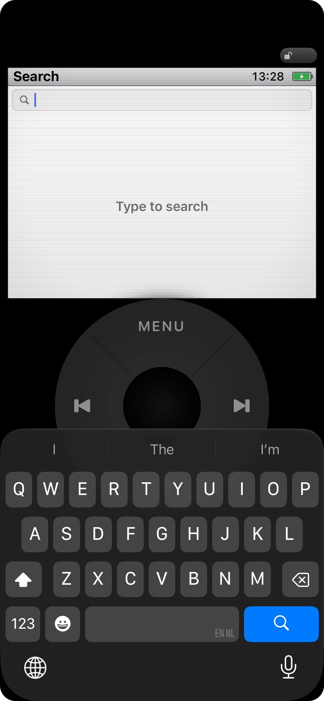
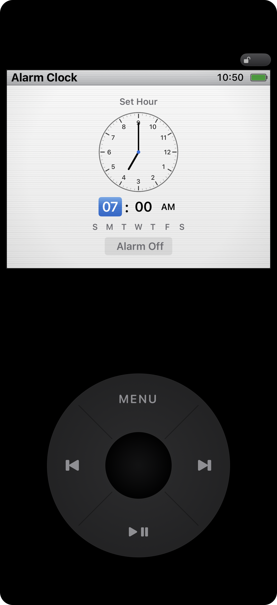
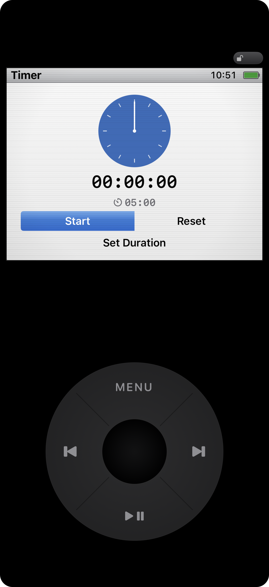
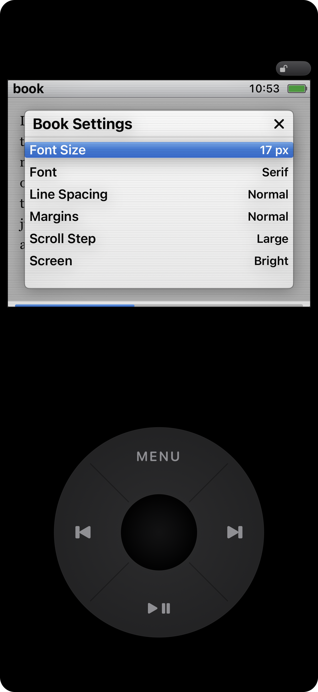
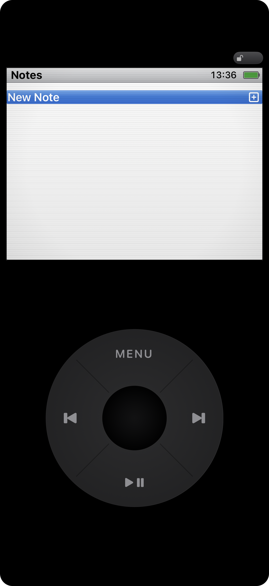
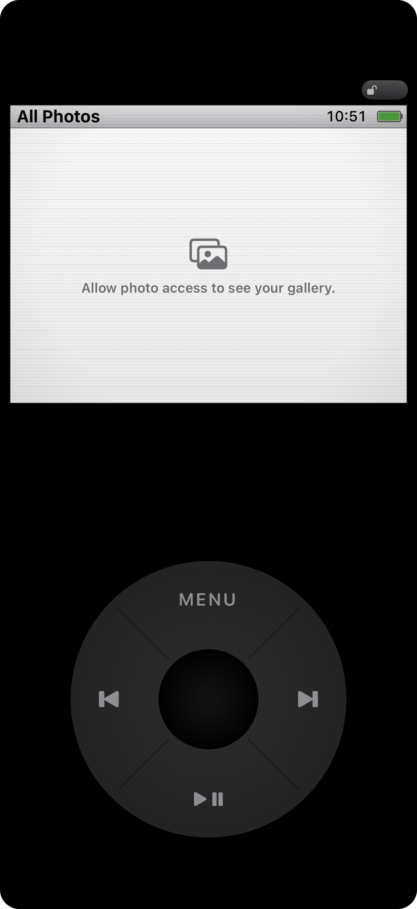
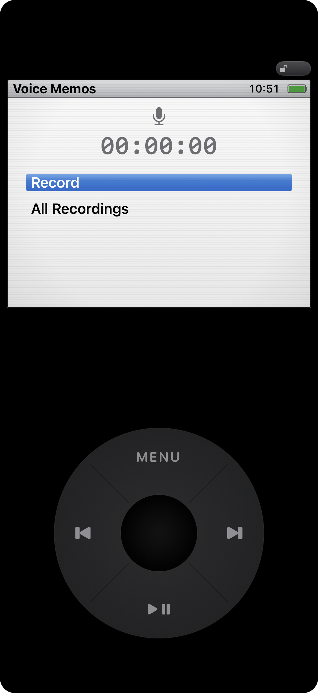
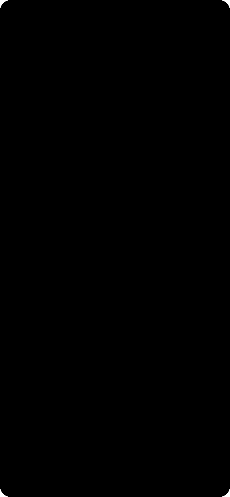
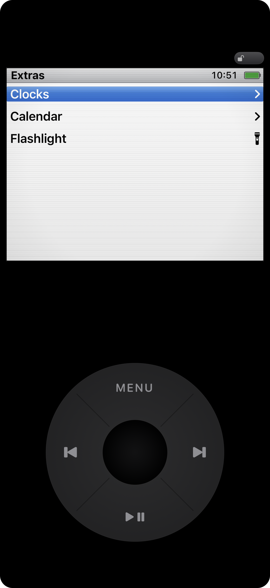
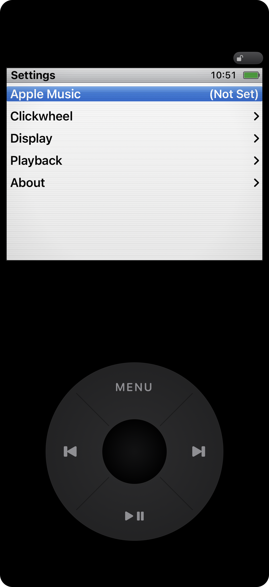
Build & install
Requirements: Xcode 26+ (iOS 18 SDK), xcodegen, an Apple ID for signing (the free Personal Team works), and a physical iPhone for music, camera, haptics and Live Activities.
brew install xcodegen
xcodegen generate # regenerate the .xcodeproj from project.yml
open iPodClassic.xcodeproj # set your signing team, then Run
# or headless:
xcodebuild -project iPodClassic.xcodeproj -scheme iPodClassic \
-destination 'platform=iOS Simulator,name=iPhone 17' build
# on your device:
xcodebuild -project iPodClassic.xcodeproj -scheme iPodClassic \
-destination 'id=<YOUR-UDID>' -allowProvisioningUpdates build
xcrun devicectl device install app --device <YOUR-UDID> \
~/Library/Developer/Xcode/DerivedData/iPodClassic-*/Build/Products/Debug-iphoneos/iPodClassic.appTests & QA hooks
xcodebuild -project iPodClassic.xcodeproj -scheme iPodClassic \
-destination 'platform=iOS Simulator,name=iPhone 17' testUnit tests cover time formatting, wheel geometry, alarm math and weekday repeats, the player model, the reader store, ZIP/EPUB extraction and parsing, and the highlight store. UI tests drive the click wheel with real touch events end to end.
Launch-environment hooks (also used for the screenshots on this page):
| Hook | Effect |
|---|---|
RESET_DEFAULTS=1 | Clear all persisted settings/stores |
START_ROUTE=<route> | Open a screen directly (music, songs, nowplaying, alarm, camera, …); readerLast reopens the last book |
FAKE_LIBRARY=1 | Seed 300 fake songs + a fake Now Playing track (MusicKit items can’t be constructed in tests) |
ALARM_FIRE_SECONDS=N | Fire the ringer N seconds after launch |
READER_IMPORT=<file> READER_CHAPTER=<n> READER_TICKS=<n> | EPUB harness: import a book, open a chapter, turn N pages |
NOW_PLAYING_PANEL=1 / BOOK_SETTINGS=1 | Open the Now Playing / Book Settings hold-panels |
Architecture in one paragraph
project.yml is the source of truth (the .xcodeproj is generated). Input flows one way: ClickWheelView → AppModel.handle(ControlEvent) → a Combine controlBus → only the top screen reacts. Every screen is a Route on a navigation stack; deep screens stay alive so state survives pops, exactly like drilling into menus on the real device. Features live in self-contained folders under Sources/Features/ (Music, Photos, Camera, Recorder, Notes, Clocks, Extras, Reader, Settings). A widget-extension target (iPodClassicWidgets) renders the Live Activities. The full contributor guide — including hard-won MusicKit, PDFKit and Swift→JS gotchas — lives in AGENTS.md.
Origin
The app began as a one-page brief (agent.md) describing the device, the features and a folder of reference screenshots — then grew feature by feature (branch → build → test → merge) with AI coding agents doing the implementation. The original reference images are not included in this repository.
FAQ
Does music work without Apple Music?
The Music features mirror your Apple Music library through MusicKit — a synced library (subscription or local-synced songs) is required.
Why is the camera black in the simulator?
Simulators have no camera hardware. The app shows a friendly notice; run on a device for the real viewfinder.
Where do my books and notes live?
In the app’s Documents folder, visible in the Files app. Nothing is uploaded anywhere.
Do the Live Activities need anything special?
They work on device out of the box (lock screen + Dynamic Island). Simulators can render them, but the Island needs hardware.